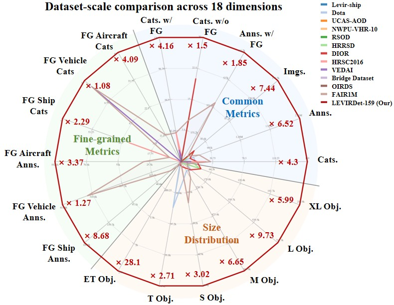
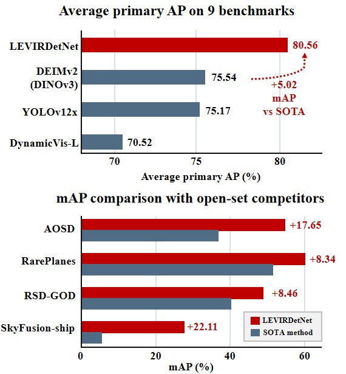

LEVIRDet OVERVIEW
We construct LEVIRDet-159, the up-to-date largest and most
fine-grained remote sensing object detection dataset, with 159
categories, ~2.56 million bounding boxes, and ~700k fine-grained
annotations under a multi-level taxonomy. Based on LEVIRDet-159, we
propose LEVIRDetNet, a scale-hierarchy-aware detection foundation
model designed for universal remote sensing detection.
Without target-domain training or fine-tuning, LEVIRDetNet ranks
first on all 9 benchmarks and improves the strongest competing
methods by 5.02 mAP on average, while maintaining stronger
precision-recall stability under practical confidence thresholds.
Read the research paper

LEVIRDet-159 has reached the largest scale in 18 dimensions.
It covers 30 common parent categories and 159 category types
across global regions and diverse imaging conditions, and
surpasses existing datasets in category number, image number,
annotation number, object-size coverage, and geographic coverage.

LEVIRDetNet achieves SOTA performance on 9 external benchmarks.
Without target-domain training or fine-tuning, LEVIRDetNet ranks
first on all nine benchmarks and improves the strongest competing
methods by 5.02 mAP on average, while maintaining stronger
precision-recall stability under practical confidence thresholds.